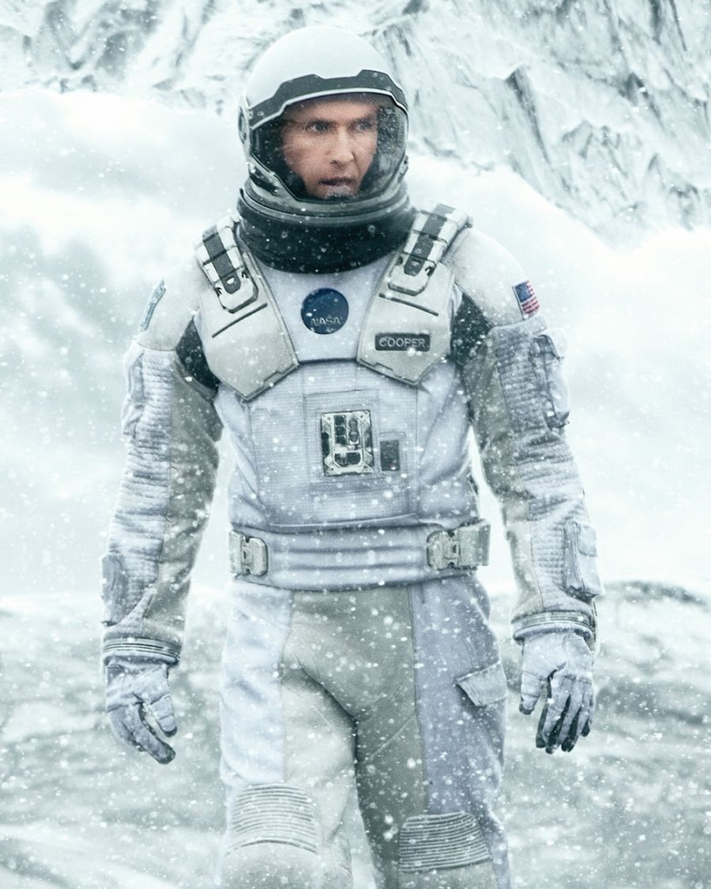
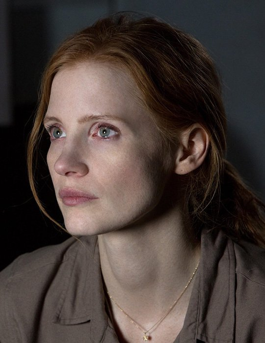
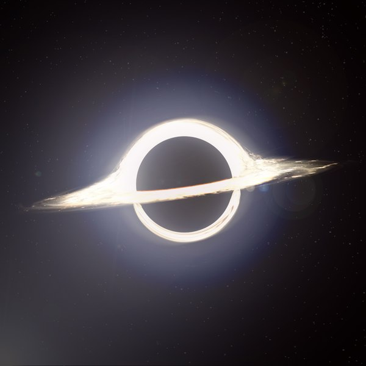

Conheça os personagens:
-

Cooper
Joseph A. Cooper é um piloto treinado da NASA com formação em engenharia e piloto da expedição interestelar. Cooper tem dois filhos, Tom Cooper e Murphy Cooper . Ele é interpretado pelo ator Matthew McConaughey. Não se sabe muito sobre a infância de Cooper, exceto que quando ele era criança não havia jogos de beisebol devido a Food Riots, entre outras coisas.
-

Murphy
Murphy Cooper era o filho mais próximo de Cooper . Ela tinha vontade de explorar e descobrir o desconhecido, muito parecida com sua mãe.
-

Romily
Romilly tinha muito medo de viagens espaciais e se incomodava com o conceito de que apenas alguns milímetros de antepara separavam ele e seus colegas astronautas do vácuo do espaço.
-

O gargantua
Gargântua é um buraco negro muito massivo e de rotação rápida . É orbitado pelos planetas Miller e Mann , bem como por uma estrela de nêutrons sem nome. Uma estrela da sequência principal, Pantagruel, estava localizada a um ano de vôo de Gargantua junto com o planeta habitável